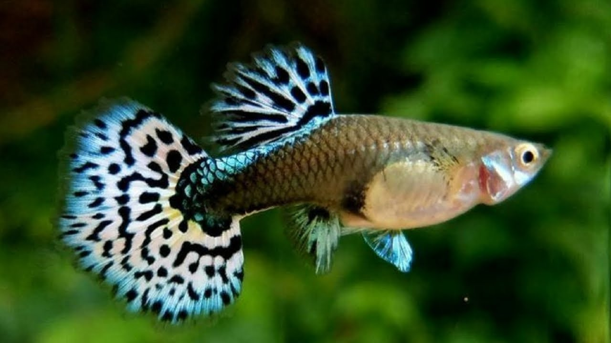

<!DOCTYPE html>
<html lang="en">
<head>
  <meta charset="UTF-8">
  <meta http-equiv="X-UA-Compatible" content="IE=edge">
  <meta name="viewport" content="width=device-width, initial-scale=1.0">
  <title>Document</title>
</head>
<body>
  
</body>
</html>
<!DOCTYPE html>
<html lang="en">
<head>
  <meta charset="UTF-8">
  <meta http-equiv="X-UA-Compatible" content="IE=edge">
  <meta name="viewport" content="width=device-width, initial-scale=1.0">
  <title>Document</title>
</head>
<body>
  
</body>
</html>
<!DOCTYPE html>
<html>
<head>
    <link rel="icon" type="image/png" href="fav2.png">
  <title>Yusuf Söyler | Haberler</title>
  <link rel="stylesheet" type="text/css" href="style.css">

  
</head>
<body>
  <header>
    <h1 class="blog-title">Yusuf Söyler | HABERLER</h1>
    <nav>
      <ul class="menu">
        <li class="menu-baslik"><a href="blog.html" target="_self">Anasayfa &nbsp</a></li>
        <li class="menu-baslik"><a href="haberler.html" target="_self">Haberler &nbsp</a></li>
        <li class="menu-baslik"><a href="incelemeler.html" target="_self">İncelemeler &nbsp</a></li>
        <li class="menu-baslik"><a href="iletişim.html" target="_self">İletişim</a></li>
      </ul>
    </nav>
  </header>
  
  <div class="container">
    <div class="main-content">
      <article class="post">
        
        <h3 class="post-title">Elon Musk'ın Beyne Çip Takma Projesi Neuralink, İnsan Testleri İçin Onay Aldı</h3>
        <p class="post-meta">Yayınlanma Tarihi: 27 Mayıs 2023</p>
        
        <p>
            Elon Musk'ın insan beynine çip yerleştirme projesi Neuralink, insanlı klinik çalışmalar için onay aldı.
             Yapılan açıklamada, başvuruların da yakında açılacağı belirtildi.
        </p>
        <br>
        <p>Milyarder iş insanı Elon Musk'ın yıllardır üzerinde çalıştığı projelerden bir tanesi "Neuralink".
             En basit anlatımı ile bir insanın beynine çip yerleştirmeyi içeren bu proje, insan hayatını bambaşka bir noktaya taşımayı amaçlıyor.
             Neuralink ile ilgili gelen son haberler ise ekibin insanlı çalışmalar için onay aldığını gözler önüne seriyor.</p>
            <br> <p>Neuralink ekibi tarafından yapılan resmi açıklamada, ABD Gıda ve İlaç Dairesi'nin (FDA) insanlı testler için onay verdiği belirtildi.
                 Oysa ki birkaç ay önce Reuters tarafından ortaya atılan bir iddia, FDA'nın geçtiğimiz yıl Neuralink'in insanlı testlerine onay vermediğini ortaya koydu.
                 Kararın nasıl ve neden değiştiği bilinmiyor.</p>
                 <br>
                 <br>
      </article>
      
      <article class="post">
        <h3 class="post-title">Basit Bir Akvaryum Balığı Gibi Görünen 'Lepistes', Aslında Ne?
             Milyonlarca İnsanın Hayatını Kurtardı: Peki ama Nasıl?</h3>
        <p class="post-meta">Yayınlanma Tarihi: 28 Mayıs 2023</p>
        
        
        
        
        <p> 
            Lepistes, dünyada ve ülkemizde en popüler akvaryum balıklarından bir tanesidir. 
            Bakımı kolay olduğu ve uygun şartlar sağlandığı zaman çılgınlar gibi ürediği için de sık sık tercih edilmektedir.

        </p>
        <br>
        <h3>Hindistan, lepistes sayesinde sıtmadan kurtuldu:</h3>
        <br>
        <p>
            Sıtma, sivrisinekler tarafından insanlara bulaştırılan ölümcül bir hastalıktır. 2014 yılında Hindistan, sıtma ile büyük bir mücadele başlattı ama sonuçsuz kaldı.
             Son çare olarak sivrisineklerin bol olduğu sulara sürü sürü lepistes bırakıldı.
              Lepistesler leziz sivrisinek larvalarıyla beslendiler ve böylece yeni sivrisineklerin üremesi durduruldu. 
            Lepistes hareketi olarak adlandırılan bu olay zaman zaman bazı Asya ülkeleri tarafından kullanılmaktadır. 

        </p>
        <br>
        <br>
      </article>
      
      <article class="post">
        <h3 class="post-title">Bitcoin, 2023’te Yüzde 60 Değer Kazandı: Peki Bitcoin Fiyatı Neye Göre Değişiyor?</h3>
        <p class="post-meta">Yayınlanma Tarihi: 29 Mayıs 2023</p>
        
        <ul class="sidebar-list">
            <li>Arz talep dengesi</li>
            <li>Madencilik</li>
            <li>Güvenlik sorunları ve regülasyonlar</li>
            <li>Medya etkisi</li>
            <li>Ekonomik ve jeopolitik gelişmeler</li>
        </ul>
        <br>
        <p>Bitcoin fiyatını belirleyen hususlar arasındaki en önemli konular bunlardır.
             Elbette bazı istisna durumlar oluşabilir ve BTC fiyatı bir anda hiç beklenmedik bir şekilde yükseliş veya düşüş trendine girebilir.</p>
             <br>
             <p>Nasıl altın, gümüş veya hisse senedi gibi yatırım araçlarında arz talep dengesinden bahsederiz, aynı durum BTC için de geçerlidir.
                 Çünkü arz talep meselesi, piyasanın oluşmasını sağlayan bir numaralı husustur.</p>
                 <br>
                 <p>
                    Satoshi Nakamoto, Bitcoin’in algoritması ile 21 milyon adet Bitcoin’i o gün bastı. 
                    Ancak bunlar şifreli ve şifrelerin çözülebilmesi için de özel cihazlar gerekiyor.
                     İşte bu cihazlardan edinen kişilere de madenci deniyor.
                 </p>
                 <br>
                 <p>
                    Kripto varlıklar, genelde merkeziyetsizlik üzerine inşa edildiler. 
                    Üstelik oldukça yeni teknolojiler. Hal böyle olunca kripto paralara duyulan güven pek de yüksek değil.
                     Üstelik zaman zaman karşılaştığımız kripto para dolandırıcılıkları da güven zedelenmesine yol açabiliyor.
                 </p>
                 <br>
                 <p>Bitcoin fiyatı ne zaman yükseliş trendine girse haber kanallarında konuşulmaya başlar. 
                    Özellikle de sert yükselişlerin yaşandığı boğa dönemlerinde… Bu durum, daha fazla insanın Bitcoin ve diğer kripto varlıklarla ilgili bilgi sahibi olmasını sağlar.
                     Hal böyle olunca insanlar, paralarını kripto paralara yatırırlar. Yani talep artar.
                     Talebin artması ise fiyatlara pozitif etki yapar.</p>
      </article>
    </div>
    
    <aside class="sidebar">
      <!--<h3 class="sidebar-title">Popüler Haberler</h3>
      
      <ul class="sidebar-list">
        <li><a href="#">Yeni iPhone Modeli Çıktı</a></li>
        <li><a href="#">Google Yapay Zeka Araştırmaları</a></li>
        <li><a href="#">Yeni Oyun Konsolu Duyurusu</a></li>
        <li><a href="#">Teknoloji Fuarı Etkinliği</a></li>
      </ul>-->
    </aside>
    
    <div class="clearfix"></div>
  </div>
  
  
</body>
</html>
